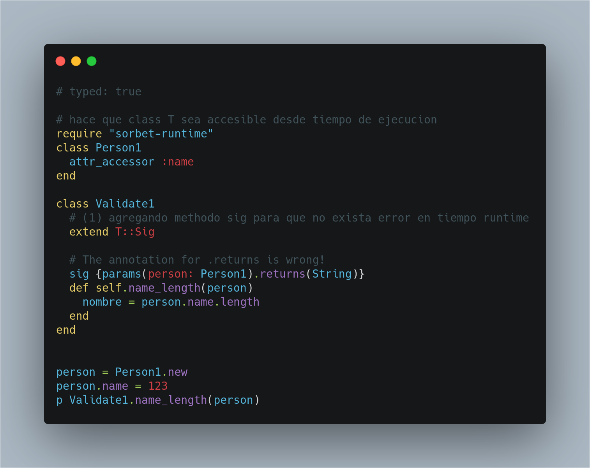
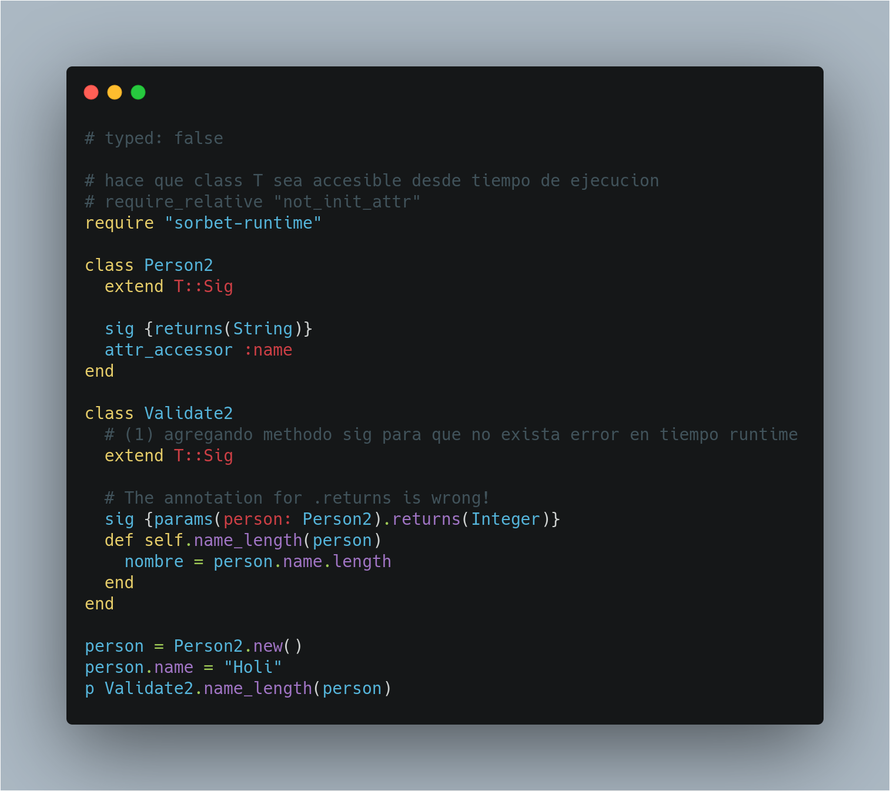

Definiciónes
Definiciónes
Definiciónes
Definiciónes
- Tipado
- Tipado estatico
- Tipado dinamico
Tipado
Tipado
Es la definicion del type que tendra una variable.
El tipado de un lenguaje define la forma como se crean y modifican las variables.
Tipado estatico
Tipado estatico
- Las variables llevan asociado el
type - El
typede una variable no se puede modificar.

Tipado dinamico
Tipado dinamico
- El
typeesta asociado al valor de una variable y no a la variable en si. - Una variable puede contener a lo largo de su ejecucion distintos
types

Tipado estatico vs Tipado dinamico
Tipado estatico vs Tipado dinamico
Tipado estático: compilador comprueba que se asignan valores correctos a las variables.
Se detectan errores en tiempo compilación
Tipado dinámico: el compilador o interprete no se sabe qué tipo de valor tiene una variable hasta la ejecucion.
Permite flexibilidad
Proposito
Proposito
Problema
Problema
Tengo que esperar a que el codigo se ejecute para darme cuenta de un error.
El problema no puede ser tan obvio

Solución
Solución
Type Checker
Declarar los types de los argumentos y de la salida para metodos

Como usarlo
Como usarlo
Setup
Setup
- Agregar las siguientes lines de codigo a
.gemfile
... gem 'sorbet', :group => :development gem 'sorbet-runtime'
- Guarda todos los archivos que tengas abierto. El siguiente comando añade una linea en todos los archivos .rb que encuentre
- Iniciar Sorbet en el proyecto
bundle exec srb init - Ejecuta
bundle exec srb tcpara una comprobacion inicial.
Funcionamiento
Funcionamiento
Sorbet comprube un archivo en las siguientes condiciones:
- No tienes alguna linea de la siguiente manera
if __FILE__ == $PROGRAM_NAME
- Tienes la siguiente linea arriba de todo el archivo
typed: true
Demo Time 1 - sin spec
Demo Time 1 - sin spec
# typed: true
class Magic1
def levitate(caster)
caster.concat(": wingardium leviosa")
end
end
p Magic1.new.levitate("Harry")
p Magic1.new.levitate(666)
p Magic1.new.levitate()
Corregir codigo y ejecutar bundle exec srb tc hasta que no salga error. (Probar si nos ayudo en algo)
Demo Time 1 - con spec
Demo Time 1 - con spec
# typed: true
# hace que class T sea accesible desde tiempo de ejecucion
require "sorbet-runtime"
class Magic2
# hace al methodo sig accesible desde tiempo de ejecucion
extend T::Sig
# declara los types de parametros y return
sig {params(caster: String).returns(String)}
def levitate(caster)
caster.concat(": wingardium leviosa")
end
end
p Magic2.new.levitate("Harry") # OK
p Magic2.new.levitate(666)
p Magic2.new.levitate()
Corregir codigo y ejecutar bundle exec srb tc hasta que no salga error. (Probar si nos ayudo en algo)
Demo 2
Demo 2


Gracias ˊ・ω・ˋ